People
實驗室成員
碩士班一般生
吳乃元
李安喻
張聿捷
朱芷萱
丘祐華
趙宇瑄
李孟修
陳高陸
王書姵
周耘
碩士在職班
黃祥
黃莉庭
博士班
李昀陞
Alumni
碩士班畢業學生
可依姓名、論文題目或年份搜尋。
李佳學｜綜合知識本體推論與詞彙分析技術之網際服務探索機制
陳瀅至｜結合資料探勘技術之適地性行動服務遞送機制
施又維｜以 REST 架構為基礎之服務混搭流程與框架
陳建璋｜具推薦功能的服務混搭系統之設計與實作
馬治群｜以商務規則為基礎之語意化網際服務搜尋方法研究
葉清隆｜結合風險評估與追蹤技術之服務組合管理機制
江政勳｜適用於智慧型手機的服務微件組合框架之設計與實作
蔡燿宇｜以統一塑模語言為基礎之服務元件探索方法
顏端儀｜結合社群網絡之網際服務搜尋與推薦機制
林璟鴻｜以標籤與服務品質為基礎之行動應用程式搜尋與管理系統
陳炳璋｜適用於行動裝置之高可用性服務遞送框架之設計與實作
陳盈臻｜測試驅動之 RESTful 服務探索機制
馬楊陞｜以狀態驅動並以微件為基礎的行動服務組合機制
林睿祥｜服務品質感知與語意化行動應用程式推薦方法
李啟嘉｜支援服務快取功能之行動應用元件架構
呂致緯｜基於自動編碼器之開放資料集查詢與視覺化機制
范振原｜基於服務相依圖之微服務測試機制
陳鵬中｜鏈結開放資料之建立、查詢與服務生成機制
何靖霆｜基於流程引擎之對話機器人框架
林軒如｜使用語意標註和圖資料庫並基於工作流程之 RESTful 服務組合機制
潘天允｜運用機器學習方法達成 Web API 分類與檢索
王家潁｜適用於電子商務網站建置之價格驅動服務推薦機制
莊晏｜基於需求腳本之微服務搜尋機制
劉邑修｜基於版本的微服務分析、監控與視覺化方法
許銘仁｜Web API 範例程式碼擷取與關聯 Web API 推薦方法
戴碩宏｜基於 Node-RED 並支援 IoT 裝置之對話機器人平台
林俊廷｜輔助微服務應用系統開發與維運之對話機器人框架
張家維｜支援行為驅動開發方法與 API 調用分析之網頁自動化測試系統
陳俊佑｜微服務契約測試與監控之視覺化方法
李佳育｜基於絞殺榕模式之微服務遷移方法研究
游婉琳｜基於 Web API 之半自動化對話機器人生成機制
陳筱蓉｜協同式 Web API 安全屬性標記與線上測試機制
陸宗文｜基於資料庫存取分析之微服務遷移方法研究
楊育湧｜事件驅動微服務架構遷移與測試方法研究
黃郁文｜支援微服務與維運之可擴充對話機器人平台設計與實作
吳朱飛｜事件驅動微服務系統之契約測試及端到端測試方法研究
王宇德｜基於 Kubernetes 與 Istio 之微服務架構系統視覺化分析與監控機制
張玉筠｜Web API 行為驅動測試自動化之研究
陳俞安｜於網站前端實施半自動化行為驅動測試之研究
王聖凱｜基於大型語言模型的微服務開發與維運之對話式輔助工具
陳宏逸｜大學教學實務問答機器人之設計與實作
謝知祐｜基於原始碼詞向量與資料存取分析之微服務識別方法
郭一杰｜基於前端行為驅動測試的半自動化 Web API 測試案例生成方法
葉航葦｜事件驅動微服務架構遷移之半自動化契約測試案例建置方法
邵安祺｜基於多資料整合與資訊檢索技術的程式設計問答機器人
梁晏慈｜基於模式的 Web 資訊系統之對話機器人介面建置方法
洪唯真｜傳統軟體專案之重構、模組化與微服務化之研究：以金融服務系統為例
賴岳均｜事件驅動Kubernetes微服務相依性監控與分析研究
彭心睿｜運用生成式 AI 與使用者行為腳本之 Web API 測試案例自動生成方法
黃子毓｜運用原始碼重構工具與大語言模型之 Spring Boot 微服務遷移方法
林維凱｜基於 Kubernetes 之微服務架構版本視覺化分析與負載模擬機制
賴冠宏｜基於 ChatOps 之微服務部署管線自動生成與監控機制
趙晨皓｜基於 ChatOps 之微服務品質分析與評估回饋機制
沈君豪｜基於機器學習的 Kubernetes 微服務系統延遲預測研究
陳柏豪｜大型語言模型輔助之PHP_Web應用程式至Python_FastAPI框架的自動遷移方法
陳逸｜基於測試驅動開發與大型語言模型之單體至微服務架構遷移方法
林珊銥｜基於大型語言模型之軟體工程教學輔助對話機器人設計
林芷穎｜支援知識圖譜與正確性查核機制之檢索擴增生成框架設計
找不到符合條件的成員。
Gallery
實驗室照片集
收錄歷年實驗室合照與活動照片，並加入 2017、2018、2019 年照片區塊。


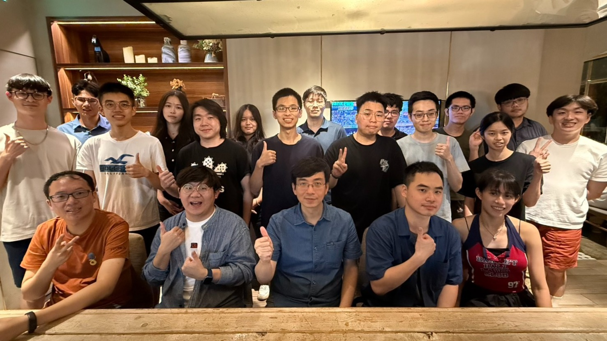

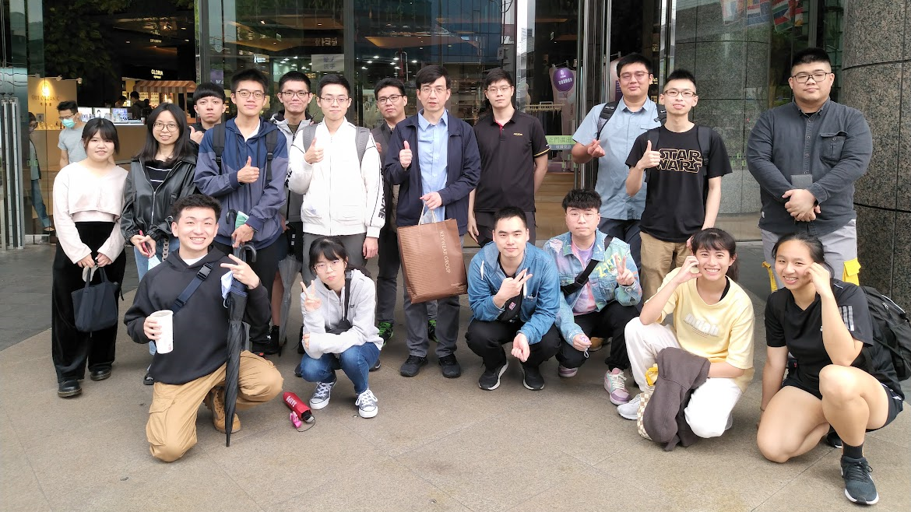
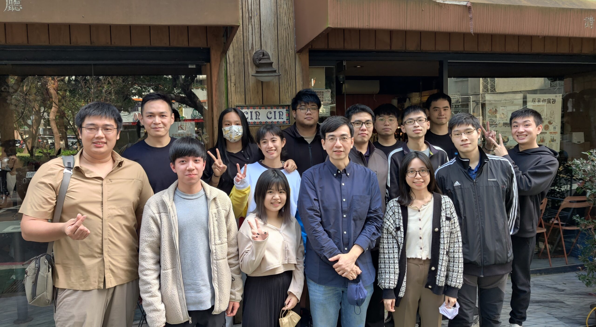
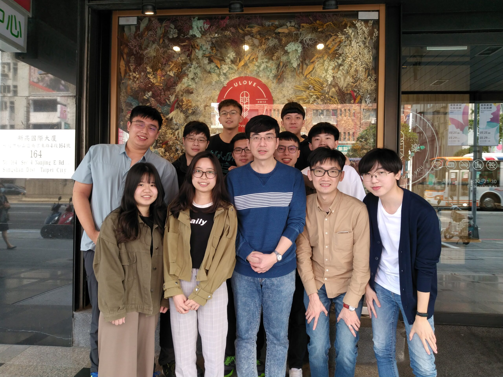
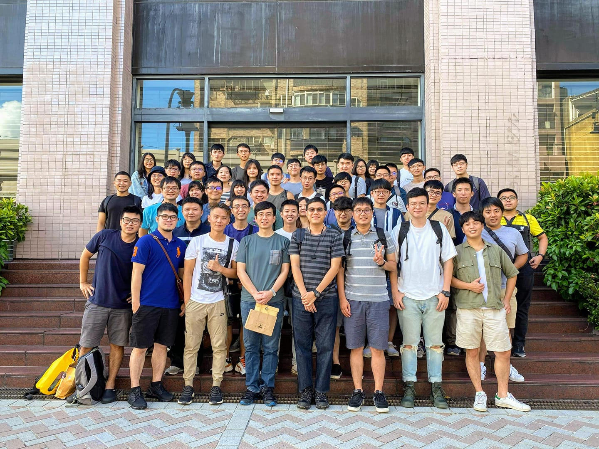
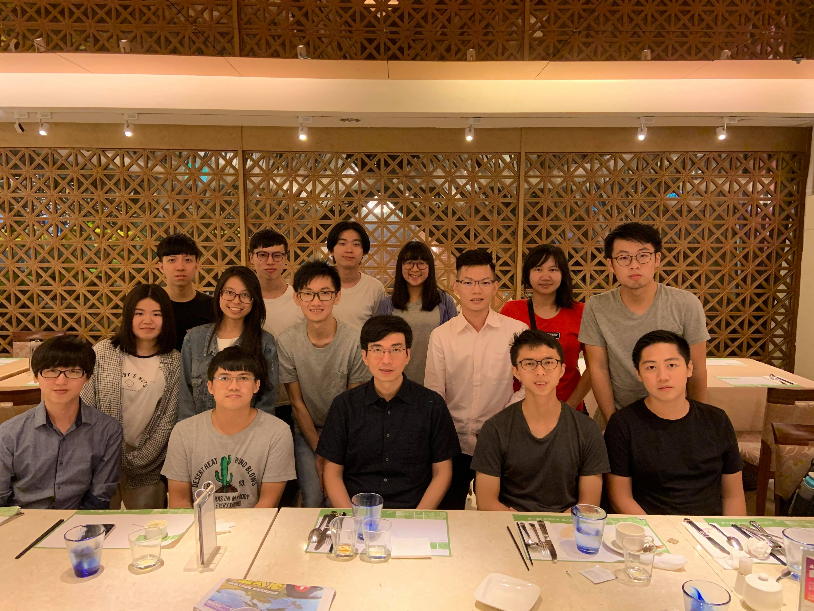
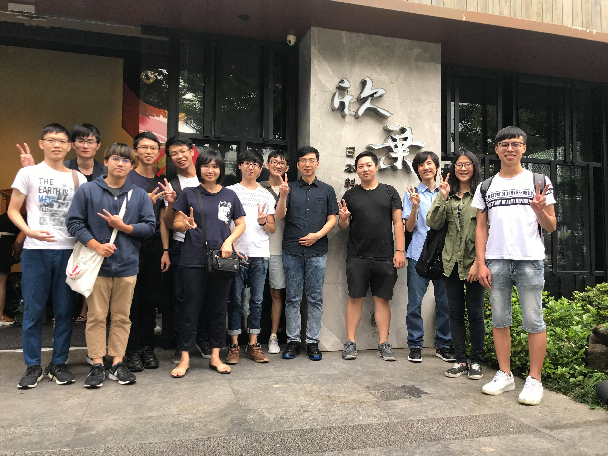
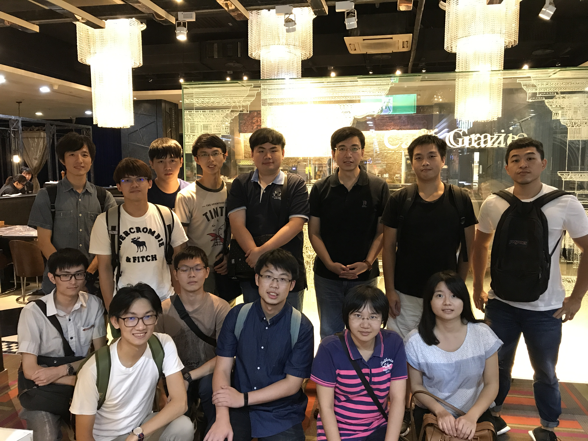
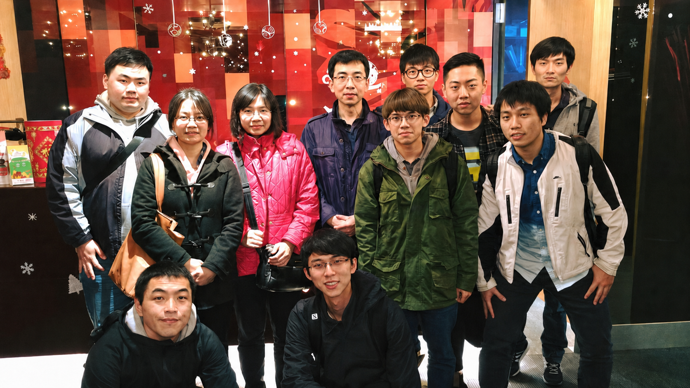
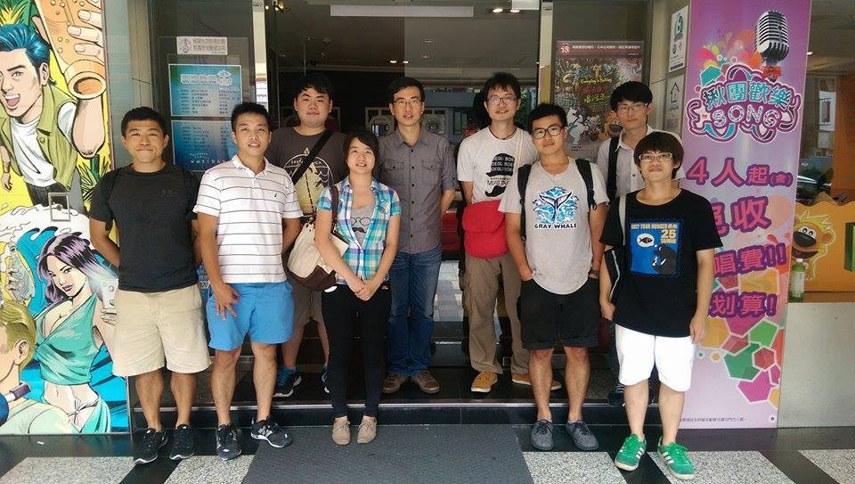
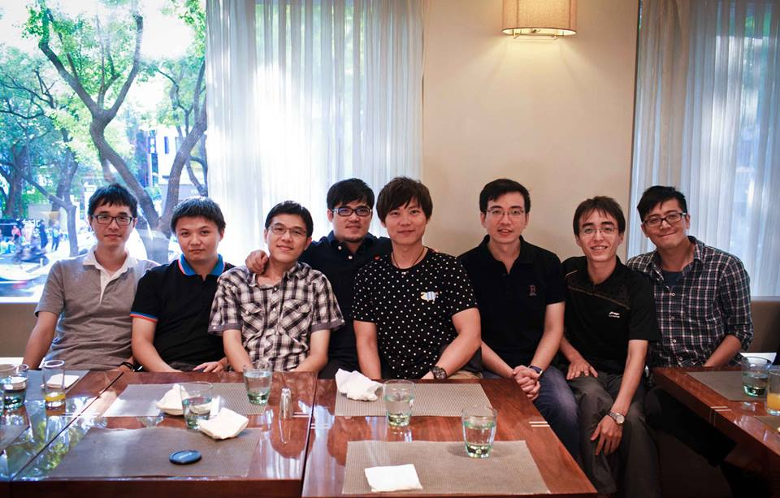
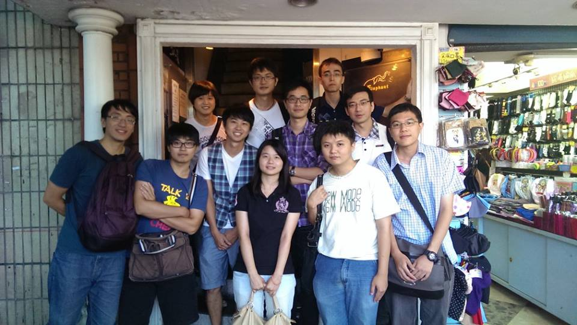
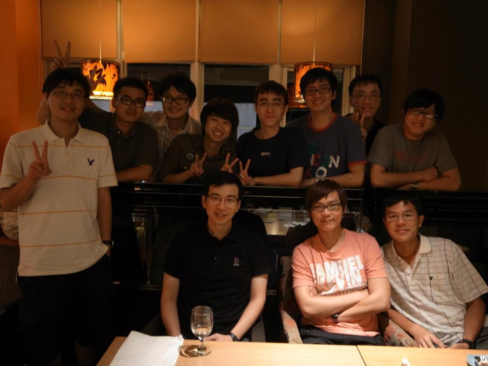